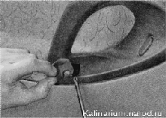

Обивка задней двери снятие и установка
При снятии обивки велика вероятность повреждения держателей. Поэтому рекомендуется приобрести запасные держатели (8 шт., «Обивка двери — снятие и установка»).
Снятие
1. Подготавливаем автомобиль к выполнению работы.
2. Отворачиваем и снимаем кнопку блокировки замка двери.
3. Лезвием шлицевой отвертки отжимаем розетку от облицовки ручки стеклоподъемника и извлекаем облицовку (она фиксирует ручку на валу механизма стеклоподъемника).
4. Снимаем с вала механизма стеклоподъемника ручку и розетку.

ЗАДНЯЯ ДВЕРЬ
5 - Оттянув внутреннюю ручку замка, крестовой отверткой отворачиваем винт крепления.
6. Снимаем внутреннюю ручку замка.
7. Шилом или шлицевой отверткой с тонким лезвием поддеваем и снимаем две заглушки внутренней ручки двери. Крестовой отверткой отворачиваем два винта крепления внутренней ручки двери.
8. Снимаем ручку с двери.
9. Шлицевой отверткой, введя ее между обивкой и дверью, поочередно извлекаем восемь держателей обивки из отверстий двери и отводим обивку от двери...
...(расположение держателей показано на снятой обивке).
Устанавливаем обивку в обратной последовательности, заменив поврежденные держатели новыми.
НАРУЖНАЯ РУЧКА ДВЕРИ - СНЯТИЕ И УСТАНОВКА
Наружная ручка задней двери — без встроенного замка, при этом снимают и устанавливают ее аналогично операциям с ручкой передней двери.